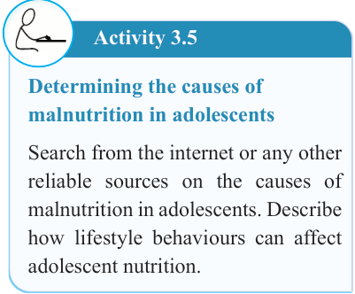

70


Food and Human Nutrition

Form Two

of the diet is lowered. This will affect the nutritional status of family members due to less care and attention to special groups. Meals can also be of low dietary diversity and served in small portion sizes. Caring practices in large families are also affected due to heavy workload experienced by women thus subjecting themselves and in particular children at more risk of being malnourished.
Inadequate nutrition education
Inadequate or lack of proper education on nutrition and awareness about the importance of a balanced diet may lead to individuals being unaware of dietary requirements needed to maintain good health. This may lead to poor decisions on food and nutrition issues that affect family and community at large. For example, some people may have money
but do not know the right type of foods to
purchase. Limited education on nutrition
may lead to poor dietary choices, poor food preparation practices, poor feeding practices, inadequate nutrient intake and thus contributing to malnutrition.
Cultural beliefs, practices, and traditions
Cultural factors play an important role in shaping dietary choices and habits of
individuals particularly among vulnerable
groups such as pregnant women, lactating
mothers, infants, young children, and the
elderly. For example, in some cultures, certain foods such as eggs, meat, fish or some vegetables are considered taboo for pregnant or breastfeeding women or
are restricted for young children. These cultural restrictions can lead to limited food options and decreased nutrient intake thus subjecting them to the risk of malnutrition.
Activity 3.5
Determining the causes of malnutrition in adolescents
Search from the internet or any other reliable sources on the causes of malnutrition in adolescents. Describe how lifestyle behaviours can affect adolescent nutrition.
Groups of individuals mostly affected by malnutrition
People are affected by malnutrition
differently, depending on their nutritional
needs. People at a high risk of malnutrition
include young children, adolescents, women of reproductive age, pregnant women, lactating mothers, old people, the sick and refugees.
Young children: Young children have high nutritional requirements because of their rapid growth and development.
Adequate food consumption at an early age particularly under the age of 5 years is vital for children’s development. Exclusive breastfeeding is recommended for the first six months of life, followed by timely complementary feeding and continued breastfeeding for at least two years.

17/09/2025 16:30